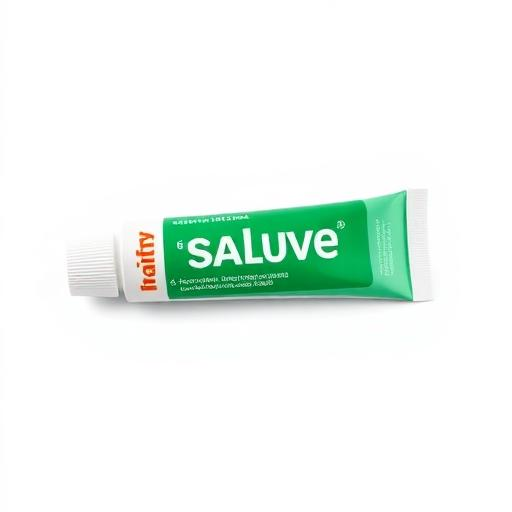
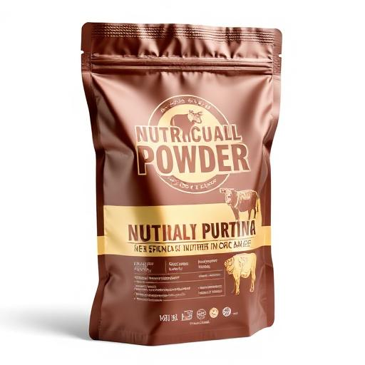

PT Sadita Indonesia
PT Sadita Indonesia
Menjelang Idul Adha, Pastikan Sapi Tetap Sehat & Nafsu Makan Terjaga
Pendamping perawatan sapi dari Sadita Indonesia untuk membantu menghadapi risiko PMK dan menjaga kondisi ternak tetap prima.

Sadita Indonesia
Perusahaan obat dan nutrisi hewan ternak yang berkomitmen membantu peternak menjaga kesehatan, daya tahan, dan performa sapi melalui produk berkualitas yang mudah diaplikasikan di lapangan.
Terdaftar Resmi
Produk terdaftar dan memenuhi standar
Info Lengkap
Konsultasi gratis via WhatsApp
Formula Teruji
Dikembangkan dengan riset lapangan
Pengiriman
Ke seluruh Indonesia
Tantangan Menjelang Idul Adha
Banyak peternak menghadapi masalah ini dan seringkali hanya menunggu tanpa penanganan yang tepat.
Nafsu Makan Menurun
Sapi tidak mau makan, berat badan turun menjelang kurban
Luka di Mulut & Kuku
Mengganggu aktivitas makan dan mobilitas sapi
Risiko Infeksi
Bakteri dan virus dapat memperburuk kondisi ternak
Pemulihan Lambat
Kondisi sapi tidak kunjung membaik meski sudah dirawat
Solusi Lengkap Perawatan Ternak
Kombinasi perawatan eksternal, dukungan nutrisi internal, dan pengendalian parasit untuk kesehatan ternak yang optimal.
APHTHOCLYN
Salep oles anti Aphthovirus PMK

Manfaat Utama
- Membantu mengurangi virus PMK di area mulut & kuku
- Membunuh bakteri di permukaan luka
- Menjaga area luka tetap bersih
Cara Pakai
- 1 Oleskan pada luka mulut & kaki sapi
- 2 Aplikasikan 2–3 kali sehari
- 3 Pastikan area bersih & kering sebelum pengolesan
GIZCOW
Bubur gizi untuk membantu pemulihan sapi

Manfaat Utama
- Membantu meningkatkan nafsu makan
- Mendukung daya tahan tubuh sapi
- Membantu mempercepat pemulihan kondisi
Cara Pakai
- 1 1 sachet dicampur dengan 2,5 L air
- 2 Campurkan ke pakan hijauan/konsentrat
- 3 Berikan 2–3 kali sehari
DITA BENDAZOLE
Obat cacing untuk berbagai jenis ternak
Manfaat Utama
- Efektif membasmi cacing pada sapi, kambing, domba, dan unggas
- Menangani cacing dewasa, telur, hingga larva
- Mendukung pertumbuhan, kenaikan bobot, efisiensi pakan, dan daya tahan ternak
Cara Pakai
- 1 Ikuti petunjuk label atau anjuran dokter hewan
- 2 Dapat dicampur pakan atau diberikan langsung sesuai sediaan
- ⚠️ Peringatan: Tidak dianjurkan untuk ternak bunting trimester pertama
Kenapa Digunakan Bersama?
APHTHOCLYN
Perawatan luar pada luka mulut & kuku
GIZCOW
Dukungan nutrisi dari dalam
Hasil Optimal
Pendekatan ini membantu sapi lebih nyaman, lebih pulih, dan lebih siap dijual atau dikurbankan.
Siapa yang Cocok?
Produk Sadita Indonesia dirancang untuk semua yang peduli dengan kesehatan dan performa ternak.
Peternak Sapi
Yang ingin menjaga kesehatan ternak dengan produk berkualitas
Penjual Sapi Kurban
Yang perlu memastikan sapi dalam kondisi prima saat dijual
Pengelola Kandang
Yang bertanggung jawab atas kesehatan banyak ternak
Jaga Kondisi Sapi Lebih Awal
Terutama menjelang Idul Adha, pencegahan dan perawatan dini adalah kunci. Konsultasikan kebutuhan ternak Anda dengan tim kami.
Konsultasi ringan, sesuai kondisi kandang Anda